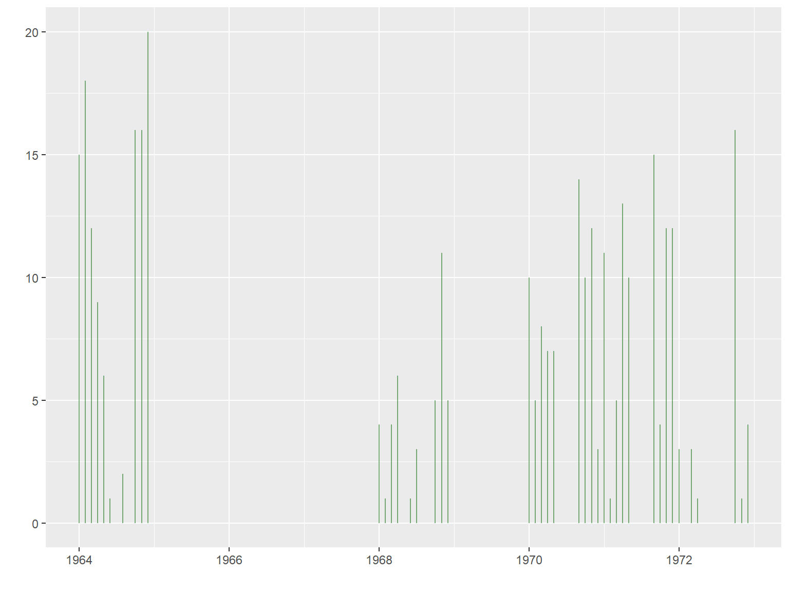
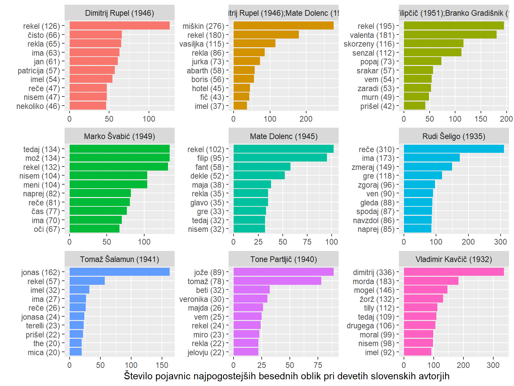

2 Na začetku je bil tidyverse
Med prvim srečanjem uporabljamo tole jezikovno gradivo s spletnega portala clarin, Juvan et al. (2022) :
Juvan, Marko; et al., 2022, Corpus of 1968 Slovenian literature Maj68 2.0, Slovenian language resource repository CLARIN.SI, ISSN 2820-4042, http://hdl.handle.net/11356/1491.
2.1 Paketki
V sledečem programskem odstavku (program chunk) preverjamo, ali so navedene programske knjižnice (library) že nameščene. Če niso, jih program namesti in naloži v računalniški spomin (RAM).
Show the code
packages = c("tidyverse", "tidytext", "janitor", "scales", "widyr",
"quanteda", "quanteda.textplots", "quanteda.textstats",
"wordcloud2", "ggwordcloud", "udpipe", "syuzhet",
"ggtext", "corpustools", "xml2", "XML", "rvest",
"readtext", "readxl", "writexl", "xlsx", "stopwords",
"xmlconvert", "lubridate")
# Install packages not yet installed
installed_packages <- packages %in% rownames(installed.packages())
if (any(installed_packages == FALSE)) {
install.packages(packages[!installed_packages])
}
# Packages loading
invisible(lapply(packages, library, character.only = TRUE))Posamezno knjižnico namestimo takole:
Show the code
install.packages("ggtext")Knjižnico naložimo v pomnilnik takole:
Show the code
library(ggtext)2.2 Odpiranje besedilnih datotek
Optimalno je, če so vse besedilne datoteke v isti mapi. Potem lahko naložimo vsa besedila z enim ukazom, tj. readtext(), v pomnilnik.
Show the code
txt <- readtext("slovenski_korpusi/maj68/*.txt")
txtreadtext object consisting of 1521 documents and 0 docvars.
# Description: df [1,521 × 2]
doc_id text
<chr> <chr>
1 maj68-0001.txt "\"Sila fletn\"..."
2 maj68-0004.txt "\"Avtobus mu\"..."
3 maj68-0005.txt "\"V zaporu s\"..."
4 maj68-0006.txt "\"Najdeva se\"..."
5 maj68-0007.txt "\"Naj se nik\"..."
6 maj68-0008.txt "\"In naenkra\"..."
# … with 1,515 more rowsVsako besedilo ima svoj doc_id in je zajeto v podatkovnem nizu (tabeli), ki smo ga poimenovali txt.
Kdo je napisal ta besedila? Odgovor se skriva podatkovnem nizu, ki ga imamo v isti mapi in ga odpremo s funkcijo read_tsv(), saj so stolpci medsebojno ločeni s tabulatorjem (\t):
Show the code
public <- read_tsv("slovenski_korpusi/maj68/maj68-publics.tsv")
head(public) %>% rmarkdown::paged_table()Stolpec z imenom …27 je prazen, zato ga bomo odstranili.
Show the code
public <- public %>%
# odstrani 27. stolpec (minus pomeni odstrani)
select(-27)2.3 Združitev tabel
Obe tabeli lahko združimo, saj imamo doc_id v tabeli txt (z besedili) in id v tabeli public. Za združevanje morata imeti oba stolpca isto ime. Zato ga bomo v tabeli public ustrezno prilagodili in v vrsticah tabele txtodstranili pripono txt v imenih posameznih besedil.
Show the code
public <- public %>%
# preimenovanje stolpca
rename(doc_id = id)
txt <- txt %>%
# odstranjevanje pripone
mutate(doc_id = str_remove(doc_id, "\\.txt"))
df <- public %>%
left_join(txt, by = "doc_id")
dim(df)[1] 1521 27Podatkovni niz z imenom df ima 1521 vrstic (rows) in 27 stolpcev (cols). Po želji lahko nekoristne stolpce odstranimo ali izberemo zaželene stolpce.
2.4 Shranjevanje tabele
Podatkovni niz lahko shranimo na disku. Možni so različne oblike. Najustreznejša oblika je golo besedilo z vejicami, podpičji ali tabulatorji (csv, csv2, txt). Podatkovni niz se shranjuje po mednarodni kodni strani UTF-8.
Show the code
# golo besedilo, stolpci ločeni s podpičji
write_csv2(df, "data/slovenska_literatura_1968.csv")Mnogi redno uporabljajo Excel, ki zahteva licenco. Potencialna slabost je, da Excel čez 10 let ne bo več podpiral starega datotečnega formata. Druga slabost je, da Excel podpira le 32767 znakov v celici.
Show the code
# vsaj ena celica presega dovoljeno število znakov v Excelu !
# zato tale funkcija ne bo nadaljevala shranjevanje datoteke
write_xlsx(df, "data/slovenska_literatura_1968.xlsx")
# tale funkcija vas le posvari o skrčenih celicah !
write.xlsx2(df, "data/slovenska_literatura_1968.xlsx")2.5 Izbor literarnih del
Izbrati želimo le prozna dela. Katere besedilne zvrsti najdemo v stolpcu text_type?
Show the code
df %>%
select(text_type) %>%
distinct() %>%
pull()[1] "proza" "poezija" "drama" "hibrid" Show the code
proza <- df %>%
filter(text_type == "proza")
dim(proza)[1] 342 27V tabeli z imenom proza je 342 vrstic (tj. proznih del) in 27 stolpcev.
2.6 Dodajanje stolpcev
S funkcijo mutate() dodajamo nove stolpce ali spremenimo vsebino stolpcev.
Kako dolga so besedila? Koliko znakov, pojavnic (tokens) in različnic (types) imajo besedila?
Show the code
proza <- proza %>%
mutate(st_znakov = nchar(text),
tokens = ntoken(text),
types = ntype(text))
proza %>%
select(doc_id, title, st_znakov, tokens, types, author_disp) %>%
arrange(-st_znakov) %>%
head(10) %>%
rmarkdown::paged_table()Štetje znakov, pojavnic in različnic vključuje tudi ločila in drugo nebesedno gradivo. Tega večinoma ne želimo.
Poenotimo in dodajmo še stolpec z datumi.
Show the code
proza <- proza %>%
# poenoti časovne navedbe - regex!
mutate(date = str_replace(date_from,
"(\\d{4})-(\\d{2})-(\\d{2})",
"\\1-\\2")) %>%
# pretvori v datumski format in nastavi 1.dan v mesecu
mutate(date = ym(date))
proza %>%
# izberi stolpce za prikaz
select(doc_id, date_from, date) %>%
# izberi naključen vzorec iz zapisov
slice_sample(n = 5) %>%
rmarkdown::paged_table()Časovna razporeditev objavljenih proznih del v obliki grafikona:
Show the code
library(lubridate)
proza %>%
count(date, name = "titles") %>%
ggplot(aes(date, titles)) +
geom_segment(aes(x = date, xend = date,
y = 0, yend = titles),
alpha = 0.5, color = "darkgreen") +
labs(x = "", y = "")
2.7 Iskanje besednih oblik
Funkcija str_detect() nam poišče znake ali besede v jezikovnem gradivu, funkicja filter() pa izloči nerelevantne vrstice v tabeli. Regularni izrazi (regex) nam pomagajo pri oženju poizvedbenih meril. V naslednjem programskem odstavku je prikazana uporaba regex. Število zadetkov se nanaša na število najdenih dokumentov.
Show the code
proza %>%
filter(str_detect(text, "dober.+dan")) %>%
select(doc_id, author_disp, text) %>%
# 16 zadetkov
count()# A tibble: 1 × 1
n
<int>
1 16Show the code
# samo besedi dober in dan, vmes pa je lahko en ali več znakov
proza %>%
filter(str_detect(text, "\\bdober\\b.+\\bdan\\b")) %>%
select(doc_id, author_disp, text) %>%
# 13 zadetkov
count()# A tibble: 1 × 1
n
<int>
1 132.8 Besede
Seznam besed (ali drugih manjših besedilnih enot) lahko ustvarimo na več načinov. V sledečem programskem odstavku uporabljamo funkcijo unnest_tokens().
Show the code
besede <- proza %>%
unnest_tokens(word, text, "words")
dim(besede)[1] 704956 31Podatkovni niz z imenom besede je dolg 704956 vrstic (tj. število pojavnic) in 30 stolpcev.
2.8.1 Štetje besed
Koliko pojavnic je v vseh zbranih proznih delih? Za izračun vsote, povprečja in drugih količin uporabljamo funkcijo summarise().
Show the code
besede %>%
summarise(freq = n())# A tibble: 1 × 1
freq
<int>
1 704956V tabeli besede je skoraj 705000 pojavnic. Toliko je tudi vrstic v tabeli, kar lahko ugotovimo tudi s funkcijo nrow().
Show the code
nrow(besede)[1] 704956Katere besedne oblike (types) se v proznih delih najpogosteje pojavljajo? Za šteje uporabljamo funkcijo count().
Show the code
besede %>%
count(word, sort = TRUE) %>%
head(10) %>%
rmarkdown::paged_table()Ni tako presenetljivo, da so funkcijske besede najpogostejše.
2.8.2 Izločevanje besed
V vsebinskih analizah želimo na vrhu besednega seznama videti predvsem besede, ki bistveno prispevajo k vsebini besedil. Funkcijskih besed se lahko znebimo na več načinov. Najosnovnejši (surov) način je uporaba seznama nezaželenih besednih oblik (stopwords).
Show the code
stop_tidy <- stopwords(language = "sl", source = "stopwords-iso") %>%
as_tibble() %>%
rename(word = value)
dim(stop_tidy)[1] 446 1Gornji seznam vsebuje 446 besednih oblik. Po želji lahko seznam podaljšamo ali skrajšamo.
Show the code
stop_tidy <- c(stopwords(language = "sl", source = "stopwords-iso"),
"še", "tem", "sploh", "mogoče", "tej",
"niti", "zato", "ampak") %>%
as_tibble() %>% rename(word = value)
dim(stop_tidy)[1] 454 1Potem nadaljujemo s “čistilno akcijo”, in sicer s funkcijo anti_join(). Oba podatkovna niza (v našem primeru besede_clean in stop_tidy) morata vsebovati stolpec z imenom word (tj. privzeto ime stolpca, ki ga funkcija anti_join() pričakuje).
Show the code
besede_clean <- besede %>%
anti_join(stop_tidy, by = "word")
dim(besede_clean)[1] 358646 31Po izločitvi nezaželenih besed se je število pojavnic bistveno zmanjšalo, tj. približno na polovico.
Ponovimo štetje besednih oblik. Oglejmo si 10 najpogostejših - s funkcijo head().
Show the code
b_stetje <- besede_clean %>%
count(word, sort = TRUE)
b_stetje %>%
head(10) %>%
rmarkdown::paged_table()Druga preprosta možnost filtriranja je izbrati le besede, dolge tri znake ali več.
Show the code
b_stetje <- besede_clean %>%
# štejemo število znakov v stolpcu word
# dodamo pogoj, da mora biti večje od 2
filter(nchar(word) > 2) %>%
# štejemo
count(word, sort = TRUE)
b_stetje %>%
head(10) %>% rmarkdown::paged_table()Preštejmo še besedne oblike v odvistnosti od avtorja! Podatkovni niz moramo grupirati po avtorjih, tj. s funkcijo group_by().
Show the code
b_avtorji <- besede_clean %>%
# šteli bomo oblike z ozirom na avtorje
group_by(author_disp) %>%
# štejemo število znakov v stolpcu word
# dodamo pogoj, da mora biti večje od 2
filter(nchar(word) > 2) %>%
# štejemo
count(word, sort = TRUE)
b_avtorji %>%
head(10) %>% rmarkdown::paged_table()Pa dodajmo še slikico z izborom avtorjev. Najprej izberemo avtorje, npr. takole:
Show the code
avtorji_select <- b_avtorji %>%
# brez neznanih avtorjev
filter(author_disp != "[Neznani avtor]") %>%
# imena ne smejo biti podvojena
distinct(author_disp) %>%
# omejuj število avtorjev
head(9) %>%
# potegni imenski niz iz tabelarnega stolpca
pull(author_disp)Upodobitev:
Show the code
b_avtorji %>%
# filtriraj glede na zgoraj ustvarjeni seznam avtorjev
filter(author_disp %in% avtorji_select) %>%
# izberi le po 10 najpogostejših besednih oblik
slice_head(n = 10) %>%
# razvrščanje besednih oblik glede na pogostnost
# to je lahko potrebno ob uporabi panelov (facet)
mutate(word = reorder_within(word, by = n,
within = paste0("(",n,")"),
sep = " ")) %>%
ggplot(aes(n, word, fill = author_disp)) +
geom_col() +
facet_wrap(~ author_disp, scales = "free") +
labs(y="", x = "Število pojavnic najpogostejših besednih oblik pri devetih slovenskih avtorjih") +
theme(legend.position = "none")
Če gornji ukrepi niso dovolj učinkoviti, so možni bolj prefinjeni postopki. Med priljubljenimi so lematizacija, označevanje besednih oblik (POS tagging), term frequency inverse document frequency (tf_idf), določevanje ključnih besed (keywords) ali drugi postopki.
2.8.3 Besedni oblak
Priljubljen in preprost način upodobitve pogostosti besed je besedni oblak. Lepe oblake riše funkcija wordcloud2(), ki privzeto pričakuje dva stolpca: besedo in pogostnost za vsako besedo.
Show the code
wordcloud2(b_stetje)Gornji besedni oblak vsebuje besedne oblike (types). Informativnejši bi bil, če bi besedne oblike lematizirali in prikazovali slovarske enote.